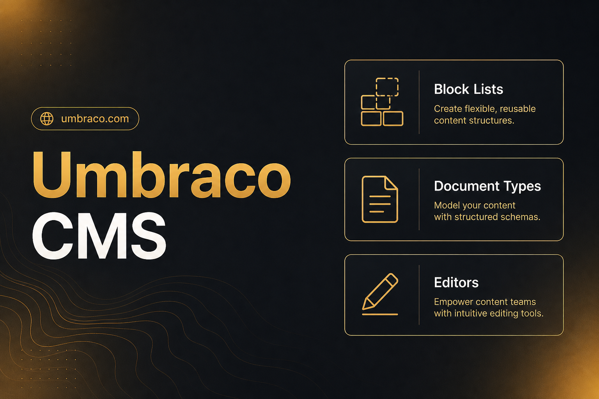

- Umbraco CMS
- .NET
- Razor
Multi-page Umbraco site
Built from scratch — custom document types, Block List components, and Razor views. The main challenge was designing the content structure so editors could manage pages without developer help for every change.